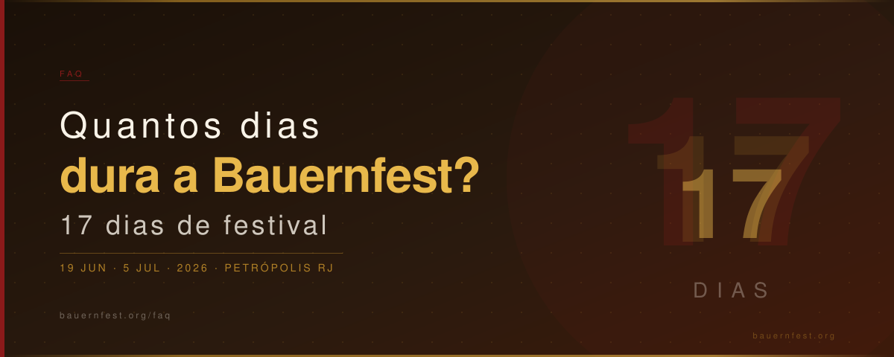

Quantos dias dura a Bauernfest?
Quantos dias dura a Bauernfest? A festa tem duração de 17 dias consecutivos. Em 2026, começa na sexta-feira, 19 de junho, e vai até sábado, 5 de julho, com programação diária no Palácio de Cristal em Petrópolis, RJ. Essa duração extensa é uma das características que torna o evento especial: você tem mais de duas semanas para escolher o melhor dia para ir.
Bauernfest 2026: 17 dias · 19 de junho a 5 de julho · Programação todos os dias · Entrada gratuita
Por que a Bauernfest dura tanto?
A longa duração reflete a dimensão do evento. Com mais de 30 anos de história, a Bauernfest cresceu para se tornar um festival que comporta inúmeros grupos folclóricos, dezenas de barracas gastronômicas e uma grade de shows que precisam de espaço no calendário. Além disso, a duração generosa permite que visitantes de cidades próximas — como Rio de Janeiro, Niterói e Volta Redonda — planejem sua ida sem pressa.
Como aproveitar os 17 dias da melhor forma
Cada dia da Bauernfest tem sua personalidade. Veja como a programação se distribui ao longo da festa:
- Dias úteis (segunda a quinta): movimento mais tranquilo, ideal para quem prefere curtir sem aglomeração. Gastronomia e danças folclóricas sempre presentes
- Sextas-feiras: o movimento começa a crescer a partir do fim de tarde, com shows noturnos animados
- Fins de semana: os dias mais concorridos, com programação completa, maior variedade de artistas e o clima de festa no pico
- Feriados: funcionamento estendido, seguindo o horário de fim de semana (12h às 23h)
Vale ir mais de uma vez?
Sim, e muitos visitantes fazem isso. Com 17 dias de programação variada, quem frequenta a Bauernfest costuma ir pelo menos duas vezes: uma para a gastronomia e outra para os shows. Os moradores de Petrópolis tratam a festa como parte do calendário social do inverno — algo que se repete a cada edição com a mesma naturalidade de um evento familiar.
Planejando sua visita
Se você vem de fora de Petrópolis, o ideal é combinar a visita à Bauernfest com outros atrativos da cidade imperial: o Museu Imperial, o Quitandinha e as aconchegantes cafeterias da região central. Uma noite de hospedagem já garante um programa completo. Consulte a programação 2026 para escolher o melhor dia.
← Voltar para o FAQ